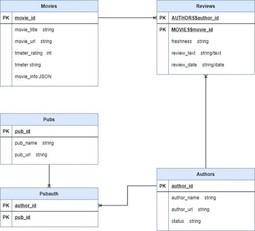

Introduction and Motivation
Originally the intent was to create a recommender system for movie critics/reviewers; a system for recommending movie reviewers (individuals, organizations, etc.) based on alignment, so that users could be connected with reviewers who share their tastes.
I needed a suitable database and figured it would be fun to fold in a data scraping project, so I took aim at Rotten Tomatoes’ extensive collection of reviewers, reviews and movies.
At some point, I shifted to a more traditional recommender system for movies; I think this was just easier to evaluate (in that I had enough domain knowledge to evaluate if a set of recommendations make sense or are sheer nonsense).
Recommender Basics
In criminally brief detail, an item-based recommender system recommends items to users. These recommendations can be based on similarities between the items themselves ("content-based") or based on the interactions of similar users with the set of items ("collaborative-filtering"). We’ll try both approaches and compare results briefly. (For more information on theory and implementation, "Hands-On Recommender Systems” by Rounak Banik is a useful guide.)
But in short, both prove necessary, in my opinion. Collaborative filtering has many advantages (especially with a dataset like this one), but by itself it fails to capture relevant factual similarities (like plot).
Acquiring the Data
In keeping with the original intent, the first objective was to collect all the reviews from all reviewers on Rotten Tomatoes (using Scrapy and Selenium). Movie data (e.g., genre, synopsis) was also collected. It was also necessary to collect information on publications, as Rotten Tomatoes lists some reviewers individually and some only when they publish for certain publications.
The data were then stored in an on-disk (for simplicity) SQLite database to provide smoother analysis and access. In total 828,627 reviews were scraped. However, reviews either about movies with a low total review count (under 8) or by reviewers with few total reviews (under 80) were excluded; these movies and reviewers lacked strong connections to other items in the dataset. After filtering, we end up with about 700,000 reviews on 20000 movies.

ERD of SQLite DB for RT data
Collaborative Filtering
In keeping with the original intent, the first objective was to collect all the reviews from all reviewers on Rotten Tomatoes (using Scrapy and Selenium). Movie data (e.g., genre, synopsis) was also collected. It was also necessary to collect information on publications, as Rotten Tomatoes lists some reviewers individually and some only when they publish for certain publications.
The data were then stored in an on-disk (for simplicity) SQLite database to provide smoother analysis and access. In total 828,627 reviews were scraped. However, reviews either about movies with a low total review count (under 8) or by reviewers with few total reviews (under 80) were excluded; these movies and reviewers lacked strong connections to other items in the dataset. After filtering, we end up with about 700,000 reviews on 20000 movies.
ERD of SQLite DB for RT data
We can build the first iteration with just the reviews themselves as features. For this we will need to:
- Retrieve the reviews from the DB; specifically, we need the rating, the movie, and the reviewer
- Convert the categorical ratings (“rotten” for negative reviews and “fresh” for positive reviews) into numerical data: negative reviews will be coded as -1, positive as 1, and where no review was conducted for a given movie by a given reviewer, 0 will be assigned.
- Create a matrix of Movies x Reviewers, where the values are the rating assigned (encoded as either -1, 0, or 1)
- Use this matrix to calculate an item-item similarity matrix; cosine similarity is generally a good choice for sparse matrices
- Write a quick function to look up a movie title in this cosine similarity matrix and return the titles of the nearest N movies.
Inspecting the results, we see the top recommendations for the horror-thriller “Us” include “Toy Story 4”. Problematic. Reviewers tend to review all big movie releases, so an element of user-choice is lost (i.e., they don’t get to choose what they review), meaning that big movies will be see by the same people, and so popular movies will be lumped together regardless of content.
An advantage of this is that the system can naturally capture filmic peer groups across different generations of reviewers (i.e., movies of the same era will naturally end up together). However, the disadvantage is also significant: the system has no way of grouping similar movies beyond their critical reception. We need to add in some additional features.
A disaster waiting to happen
Content-based Features
What information do we have about the actual content of the movies? Well, we have the genre(s) (Rotten Tomatoes supports listing multiple genres) and the synopsis in the database. These turn out to be powerful additions to the system.
We need to vectorize these fields. For the genres, we can get a list of all possible genres and then one-hot encode the genre column; for each genre, each movie will be assigned a 1 if that genre is present in the genres column or 0 if not.
For the synopsis, we can use a bag-of-words approach and tokenize the synopsis. We’ll stem and remove stop words (with a few custom additions to the list). We also have to decide on an ngram range and whether or not we want to limit the vocabulary. For now, we’ll use uni-, bi- and trigrams, and we won’t impose any limits on the vocabulary.
In Search of Efficiency
We can concatenate these new features to the reviewer-based features from our collaborative filtering efforts. Now that we have our feature matrix, we can calculate the cosine similarity matrix using essentially the same procedure as earlier. However, we have about 20000 items in our matrix. Since each item is compared against itself, we end up with a 20000 x 20000 dense matrix, which is difficult to work with; the storage costs alone are significant.
Instead of the dense cosine similarity matrix, we can work with the sparse feature matrix. First, we can use sklearn to apply SVD and k-means clustering to the reviews and create clusters rather than retaining all the reviewer information. Next, we add in the genre and synopsis features.
Now we can query the feature matrix using nearest neighbors to get recommendations on the fly; this proves to be a more efficient way of getting recommendations.
Try out an online demo!